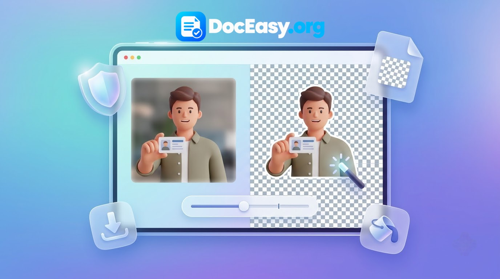

🪄 Free Image Background Remover Online
Remove portrait, document, ID card or object backgrounds instantly — 100% in your browser. No upload, no signup, no watermark.
Select Any Picture, Object or ID Card
Supports portraits, documents, cards & objects — 100% local processing
Free Online Image Background Remover — AI Transparent PNG in Seconds (2026)
Removing a background from a photo used to require expensive software like Photoshop, hours of manual lasso work, and a lot of patience. Not anymore. DocEasy's free image background remover uses a modern AI neural network that runs entirely inside your browser — no software installation, no signup, no watermark, and 100% privacy because your photos never leave your device. Whether you need a transparent PNG of a product for an e-commerce listing, a clean cutout of your face for a LinkedIn profile, or a white-background copy of your Aadhaar or PAN card for an online form, this tool does it in seconds.

📷 [Place Demo Image: assets/images/bg-remover-demo.jpg]What is an Image Background Remover?
An image background remover is a tool that automatically detects the main subject of a photo — a person, product, animal, logo, or document — and erases everything behind it, leaving you with a clean cutout that has a transparent background. The result is saved as a PNG file with an alpha channel (RGBA), which means you can place that cutout on top of any other image, colour, or design without seeing any leftover edges or white boxes. Modern AI-powered tools like this one can detect even the finest details — individual strands of hair, the curved corners of an ID card, the fuzzy outline of a pet — without any manual selection.
How AI Background Removal Works (Under the Hood)
Older background removal tools relied on colour-difference algorithms — they compared each pixel to a sampled background colour and erased pixels that were "close enough". This worked fine for studio photos with a plain white or blue background, but failed badly on real-world images with shadows, gradients, textured walls, or multiple objects.
Modern AI models work differently. The neural network used in this tool has been trained on millions of images containing people, products, cards, and objects. When you upload a photo, the model:
- Analyses the image at multiple scales to identify the primary subject.
- Predicts a soft "matte" mask for every pixel — 0 for background, 1 for subject, and fractional values for soft edges like hair.
- Composites the subject onto a transparent canvas using that matte.
The entire process runs on your device using a WebAssembly-based runtime — no server, no upload, no delay.
How to Use the Background Remover — Step by Step
Removing a background takes just four simple steps:
- Upload Your Image: Drag and drop a JPG, PNG, or WebP file onto the upload area, or click the box to browse. Your image is read directly into browser memory — nothing is uploaded anywhere.
- Wait for AI Processing: The AI model loads once (about 40 MB, cached for future visits) and then processes your image in a few seconds. You'll see a progress indicator.
- Fine-Tune if Needed: Use the Edge Smoothness slider to soften jagged edges (ideal for hair and fur). If you want a solid background instead of transparency, switch to Solid Color mode.
- Download: Click the Download button to save a high-resolution transparent PNG. That's it — no signup, no email, no payment.
Why Choose DocEasy's Background Remover?
1. 100% Browser-Based — Total Privacy
Unlike most online tools, DocEasy never uploads your images to a server. All AI processing happens locally inside your browser tab. This means your photos — whether they contain your face, your ID card, your clients' products, or your private documents — never travel over the internet. You can even disconnect from Wi-Fi after the page loads and continue working fully offline.
2. AI-Powered Precision on Any Subject
The neural network handles complex edges that manual tools simply can't. Fine hair, furry pets, intricate jewellery, transparent objects, and the slightly curved corners of an ID card are all handled accurately. No clicking, no tracing, no manual selection.
3. Lossless Output Quality
Your exported PNG keeps the full original resolution of your uploaded image. Upload a 4K photo, and you get a 4K cutout. There is no downsampling, no compression artefacts, and no forced watermark.
4. Works for People, Products, Documents & Logos
One engine handles all of it. You don't need a separate tool for portraits, a separate tool for products, and a separate tool for ID cards. The same AI model adapts to whatever you throw at it.
5. Free Forever, No Limits
Unlimited images. No daily cap. No credit card. No "upgrade to premium" nag screens. DocEasy is built as a public utility for students, freelancers, small businesses, and anyone who needs a quick background removal without paying a subscription.
12 Best Use Cases for a Background Remover
- E-commerce product photos: Cut out products and place them on a clean white or branded background for Amazon, Flipkart, Shopify, or Meesho listings.
- ID card copies for official forms: Convert Aadhaar, PAN, Voter ID, or Driving Licence photos into clean cutouts for attaching to exam forms and bank applications.
- Passport and visa photos: Replace messy home backgrounds with plain white or blue as per government requirements.
- LinkedIn and résumé profile pictures: Get a professional studio-style cutout without hiring a photographer.
- YouTube thumbnails: Cut out your face or a product and layer it on a colourful thumbnail design.
- Social media posts: Create transparent stickers, badges, and overlays for Instagram, Facebook, and WhatsApp status.
- Presentations and reports: Drop a clean cutout of a person, chart, or product into PowerPoint or Google Slides.
- Business cards and letterheads: Cut out a company logo from a photo and place it on a professional design.
- E-signature backgrounds: Remove the paper background from a scanned signature for use in digital documents.
- Photo collages and memes: Cut out friends' faces or funny objects to compose custom collages.
- Product mockups for designers: Place a clean cutout of a shirt, shoe, or bag into a mockup template.
- T-shirt printing and merchandise: Prepare transparent PNG designs for print-on-demand platforms like Printrove and Redbubble.
Tips for Perfect Cutouts — Best Practices
- Use a high-resolution source: The higher the input quality, the cleaner the AI cutout. Avoid screenshots; use the original photo if possible.
- Choose a clear subject: The AI works best when the subject is well-lit and clearly separated from the background. Blurry photos produce softer edges.
- Avoid heavy compression artefacts: JPGs saved at low quality have pixelated edges. Save a cleaner copy before uploading.
- Watch the edges: Zoom into the preview to check the boundary. If you see halos, increase the Edge Feathering slider by 1–2px.
- For ID cards: Photograph the card flat on a dark matte surface with even lighting. Avoid flash glare and shadows.
- For portraits: Keep hair away from complex backgrounds. Diffused front lighting works best.
Image Format & Quality Guide
The tool accepts a wide range of input formats and exports a single universal output:
- JPG / JPEG: The most common format. Fast to process but lossy — fine detail around edges may already be degraded.
- PNG: Lossless. Best quality for AI processing. Recommended if you have a choice.
- WebP: Modern, compact, and lossless. Supported and produces excellent cutouts.
- HEIC: iPhone's default format. Convert to JPG first for best results.
- Output: Always a high-resolution transparent PNG (RGBA) — perfect for any design tool or print workflow.
Common Problems & Quick Fixes
Jagged edges on hair
Increase the Edge Feathering slider to 1–3px. This softens the boundary so hair blends naturally with the new background.
Leftover bits of background
Usually caused by shadows or gradients similar to the subject's colour. Try a cleaner source photo, or upload a higher-resolution image.
Cutout looks blurry
This often happens if the source photo was already low-resolution or heavily compressed. Upload the sharpest available version.
AI model slow to load first time
The 40 MB model downloads only once. After the first run, it is cached and loads instantly — even offline.
Privacy and Security
Photos often contain sensitive personal information — your face, your family, your ID cards, your client's product. DocEasy is built so that none of it ever leaves your device:
- No uploads: All processing happens inside your browser tab.
- No server processing: There is no DocEasy server that handles your images.
- No tracking: We don't log what you upload or when.
- No account needed: Use the tool completely anonymously.
- Offline capable: After loading once, the tool works with Wi-Fi off.
You can verify this yourself — open Developer Tools (F12), switch to the Network tab, and drop an image. You will see zero requests carrying your image data to any server.
Frequently Asked Questions (FAQ)
Is this background remover really free?
Yes. DocEasy's background remover is 100% free with no signup, no email, no daily limit, and no watermark. You can process unlimited images.
Are my photos uploaded to a server?
No. All processing runs entirely in your browser using a local AI model. Your images never leave your device.
Does it work on Aadhaar, PAN, and Voter ID cards?
Yes. The AI engine handles flat objects, cards, and documents with excellent precision. Perfect for preparing ID card copies for official forms and printouts.
Will the exported PNG have a genuine transparent background?
Yes. When Transparent mode is selected, the output preserves a true alpha channel (RGBA), allowing you to overlay your subject on any other design.
How long does the AI model take to download?
About 40 MB, and only once. It is cached by your browser and reused instantly on future visits — even offline.
Can I change the background to white, blue, or a custom colour?
Yes. Switch to Solid Color mode and pick from presets (white, blue, red, green) or use the custom colour picker for any hex code.
Does it work on mobile phones?
Yes. Fully responsive on Android and iOS including Chrome, Safari, Firefox, and Samsung Internet.
What image formats are supported?
Input: JPG, JPEG, PNG, WebP, and most standard formats. Output: transparent PNG in full original resolution.
Is there a file size limit?
No hard limit. Very large images (above 10 MB) may take longer on older devices. For best speed, resize to under 4000px before uploading.
Can I use the cutout for commercial purposes?
Yes. The cutouts you create are yours to use for personal or commercial projects. DocEasy claims no rights over your images.
Why is my cutout blurry around the hair?
Hair is the hardest element in background removal. Increase edge feathering slightly (1–2px) or use a higher-resolution source image.
Does the tool work offline?
Yes. After the page and AI model load once, you can disconnect from the internet and continue removing backgrounds entirely offline.
Related DocEasy Tools
Explore our other free browser-based image and document tools: